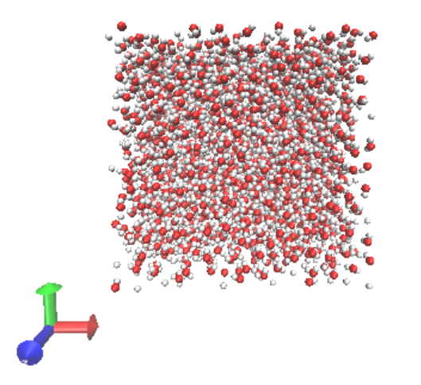

Tutorial for box of rigid water#
Note
The following tutorial assumes you have compiled DL_field and are working from the dl_f_4.6 directory. Please visit the getting started page before starting.
In this tutorial, we will use DL_FIELD to create a box of SPC/E water.
We require that DL_FIELD has been compiled within a Linux environment (including WSL and cygwin), and you have installed both DL_POLY and GROMACS on your system. There are instructions on compiling both software on their respective websites.
Contents#
Creating a water box#
DL_FIELD has a dedicated solution maker which can be used to create boxes of liquid. This is specified in the control file with the below line (line 13)
1 1.05 g/cm^3 1.6 * Solution Maker: on/off, density, unit, cutoff
which takes the following options:
- On/Off Flag#
1to turn the solution maker on;0to turn it off.- Density#
The target density of your box (e.g.
0.1for 0.1 mol/dm³).- Unit#
The density units (e.g.
g/cm³). This determines the number of molecules in the system depending on simulation box size. The box must be orthogonal. Density units,kg/cm³, and concentration units,mol/dm³, are also available. Specifyingmoleculeallows the user to specify the number of molecules.- Cutoff#
The minimum separation (in angstroms) used when packing the liquid molecules (e.g.
1.6).
This feature randomly orientates the liquid molecule template and inserts duplicates of them into the simulation box. Sometimes, DL_FIELD might be unsuccessful, in which case users should adjust the cutoff value.
Using the key options highlighted in the following control file, we can make a box of SPC/E water with the Solution Maker. The initial input spce.pdb can be accessed here.
SPC/E water
1 * Construct DL_POLY output files
gromacs * Seconday output files (gromacs, chemshell or none).
opls2005 * Type of force field require (see list below for choices).
kJ/mol * Energy unit: kcal/mol, kJ/mol, eV, or K.
normal * Conversion criteria (strict, normal, loose)
0 * Bond type (0=default, 1=harmonic , 2=Morse)
0 * Angle type (0=default, 1=harmonic, 2=harmonic cos)
none * Include user-defined information. Put 'none' or a .udff filename
1 * Verbosity mode: 1 = on, 0 = off
tutorial_confs/spce.pdb *Examples/ethanol_shell.pdb *plasticizer/pentane.pdb * Configuration file.
none * Output file in PDB. Put 'none' if not needed.
1 1 g/cm^3 2.15 * Solution Maker: on/off, density, unit, cutoff)
0 * Optimise FIELD output size, if possible? 1=yes 0=no
2 * Atom display: 1 = DL_FIELD format. 2 = Standard format
1 * Vdw display format: 1 = 12-6 format 2 = LJ format
default * Epsilon mixing rule (organic FF only) : 1 = geometric 2 = arithmatic or default
default * Sigma mixing rule (organic FF only) : 1 = geometric 2 = arithmatic or default
1 * Epsilon mixing rule (inorganic FF only) : 1 = geometric 2 = arithmatic
1 * Sigma mixing rule (inorganic FF only) : 1 = geometric 2 = arithmatic
1 * Epsilon mixing rule (BETWEEN different FF) : 1 = geometric 2 = arithmatic
1 * Sigma mixing rule (BETWEEN different FF): 1 = geometric 2 = arithmatic
0 * Display additional info. for protein 1=Yes 0=No
0 * Freeze atoms? 1 = Yes (see below) 0 = No
0 * Tether atoms? 1 = Yes (see below) 0 = No
0 * Constrain bonds? 1 = Yes (see below) 0 = No
0 * Apply rigid body? 1 = Yes (see below) 0 = No
1 * Periodic condition ? 0=no, other number = type of box (see below)
40.000 0.0000 0.000000 * Cell vector a (x, y, z)
0.000 40.000 0.000000 * Cell vector b (x, y, z)
0.000 0.000 40.000 * Cell vector c (x, y, z)
default * 1-4 scaling for coulombic (put default or x for scaling=x)
default * 1-4 scaling for vdw (put default or x for scaling=x)
0 300.0 * Include velocity? 1=yes, 0=no and scaling temperature.
0 * Position solute at origin? 1 = yes, 0=no
none 1.8 default * Solvate model? none or specify solvent (see below) and distance criteria.
0 10.0 * Add counter ions? 1=yes, 0=no, minimum distance from solute
...
Visualisation#
After running DL_FIELD:
$ ./dl_field
we can view the output structure file (.gro) in VMD or similar software:
{kind=link}
We can see here that the water molecules are relatively evenly dispersed within the box. You should always check this is the case using the Solution Maker.
Note
The DL_FIELD Solvation Feature can also be used to create a box of water, making use of the DL_FIELD solvent templates. This is left as an exercise for the reader. See the polyethylene-xylene tutorial for an example on how to use this feature.